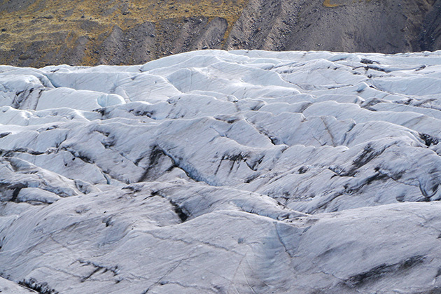
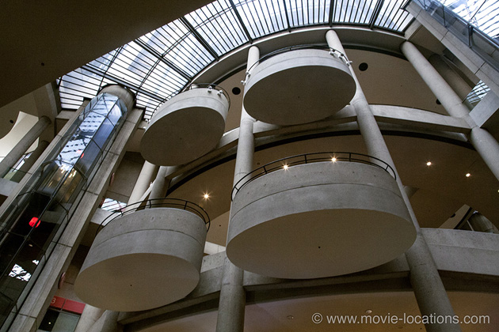
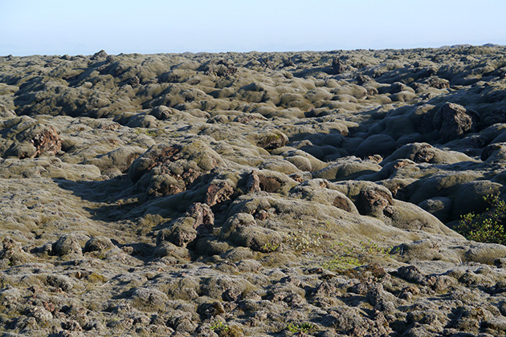

Interstellar
Main Content

Discover where Christopher Nolan's Interstellar (2014) was filmed, around Alberta; Iceland; and at the Western Bonaventura Hotel, Downtown Los Angeles.
Christopher Nolan’s sci-fi epic owes quite a debt to Stanley Kubrick’s 2001: A Space Odyssey, and is mightily impressive for most of its running length.
The method of space travel was based on the work of physicist Dr Kip Thorne (which was also the basis for Carl Sagan's novel, Contact), and Dr Thorne laid down two guidelines to be strictly adhered to: nothing would violate established physical laws, and all the wild speculations would spring from science and not from the creative mind of a screenwriter.
Then one character observes that “Love is the one thing that we're capable of perceiving that transcends dimensions of time and space”, which feels like the ultimate screenwriter cop-out.
The early, earthbound scenes are filmed in the area around Calgary, in Alberta, Canada, coincidentally near several locations from Ang Lee’s Brokeback Mountain.
The ranch-house where Cooper (Matthew McConaughey) lives with his kids and his father (John Lithgow) was built for the film near Longview, about 35 miles south of Calgary.
After his experience as producer on Man Of Steel, director Nolan believed it was feasible to grow the 500 acres of corn needed. Not only that, but the corn was then sold at a profit.
The school, where Cooper learns that “the world needs farmers” at the parent-teacher conference, is Longview School, 128 Morrison Road, in Longview.
North of Longview, toward Calgary, the Seaman Stadium in the town of Okotoks hosted the ball-game which is brought to a premature end by one of the increasingly frequent dust storms threatening the planet.
The small town through which the Cooper family drives during the storm is the Main Street of Fort Macleod, over 100 miles southeast of Calgary, where giant fans kicked up thick (but biodegradable) dust. You probably won’t recognise Fort Macleod behind those impenetrable clouds, but it was the town which became ‘Riverton’ in Brokeback Mountain, where Ennis and Alma (Heath Ledger and Michelle Williams) lived in an apartment above the Laundromat.
Responding to mysterious messages, the Coopers take the Spray Lakes Road / Three Sisters Parkway east from Canmore a couple of miles to the entrance to the secret NORAD facility, which was built at Goat Creek parking lot, south of Whiteman’s Pond beneath Ha Ling Peak. More Brokeback – this was the area where Ennis and Jack pitched their tent on the night their passions erupted.

The cavernous interior of the NASA facility, with its circular balconies, is the enormous lobby of the Westin Bonaventure Hotel, 404 South Figueroa Street, downtown Los Angeles. It took three weeks to build the giant set which towered up to Level 6, and three days to shoot the scenes.
The hotel is a screen favourite, seen in True Lies, In The Line of Fire, Sam Raimi's Darkman, the 1983 remake of Breathless, Strange Days, Rain Man and glimpsed as the band’s record company HQ in This Is Spinal Tap.

The water and ice planet surfaces were filmed in Iceland, where Nolan had previously filmed parts of Batman Begins in 2005. Mock spaceships weighing around 4,500 kg had to be transported to the icy wastes.
The two main filming sites are Orrustuhóll in the Eldhraun lava field; and Svínafellsjökull, east of Skaftafell, an outlet glacier of Vatnajökull, both in southern Iceland.
Orrustuhóll (not to be confused with Orrustuhóll in western Iceland) is part of a vast lava field about nine miles northeast of Kirkjubaejarklaustur. It was an islet in the middle of the Hverfisfljót River until, in 1783, the Lakagígar eruption inundated the land with one of the largest lava flows in the country’s history. The river subsequently found its way back to the surface and the warm water has encouraged vegetation in the area that was nothing more than black sand. It’s claimed that the Apollo 11 crew trained for their impending moonwalk here.
The icy planet of Dr Mann (Matt Damon) is Svínafellsjökull Glacier, east of Skaftafell, an outlet glacier of Vatnajökull in Vatnajökull National Park. Parts of Batman Begins and TV’s Game Of Thrones were also filmed here.
Visit Info
Visit The Film Locations
Alberta
Visit: Alberta
Visit: Calgary
Visit: Canmore
Visit: Fort Macleod
Iceland
Visit: Iceland
Visit: Reykjavik
Flights: Keflavík International Airport, Southern Peninsula, 235, Iceland (tel: +354.425.6000)
Visit: Vatnajökull National Park
California | Los Angeles
Visit: Los Angeles
Flights: Los Angeles International Airport (LAX), 1 World Way, Los Angeles, CA 90045 (tel: 424.646.5252)
Travelling around: Los Angeles Metro
Stay at: the Westin Bonaventure Hotel, 404 South Figueroa Street, Los Angeles, CA, 90071 (tel: 213.624.1000)